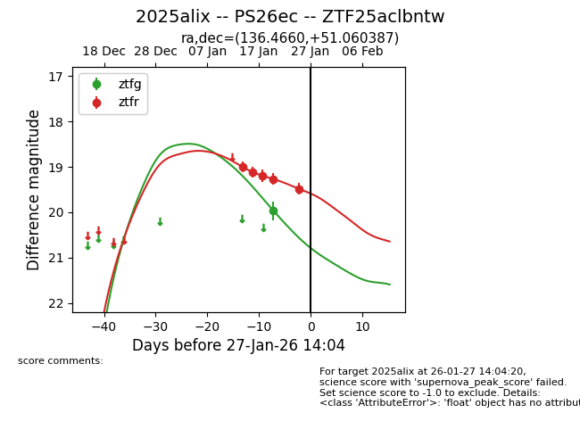
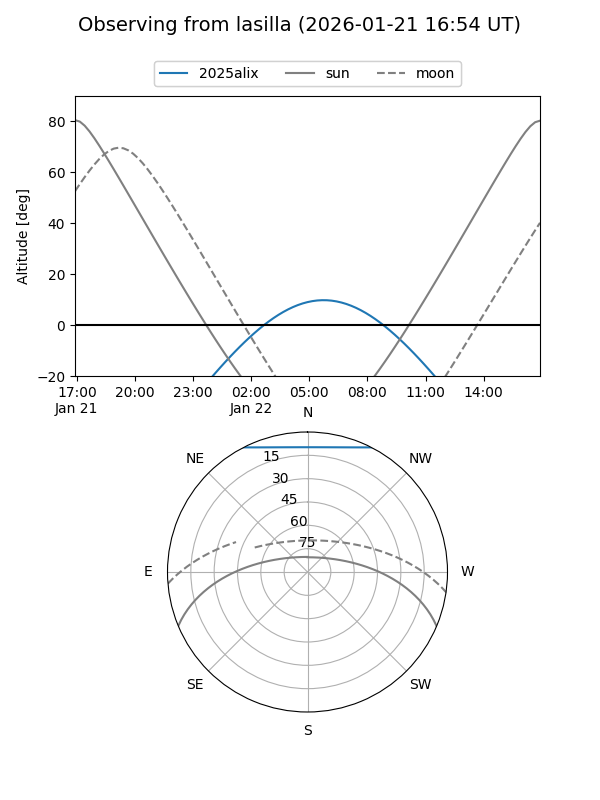
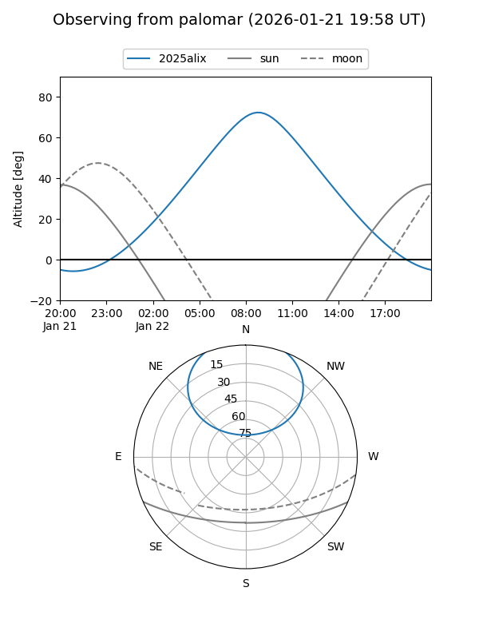
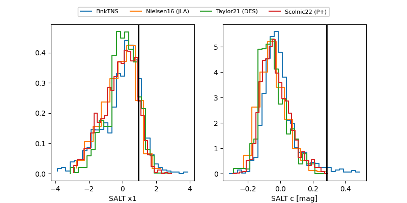

2025alix
Target 2025alix at 2026-01-23 19:35
Aliases and brokers:
FINK: link
Lasair: link
ALeRCE: link
TNS: link
YSE: link
alt names
ZTF25aclbntw (ztf,fink_ztf)
2025alix (tns,yse)
PS26ec (panstarrs)
Coordinates:
equatorial (ra, dec) = 136.4660,+51.06039
equatorial (HMS+DMS) = 09:05:51.84,+51:03:37.39
galactic (l, b) = (167.3809,+41.62600)
Flags:
Photometry:
last ztfg=19.96, ztfr=19.27
1 ztfg, 4 ztfr detections
Lightcurve

Visibility


Additional plots
